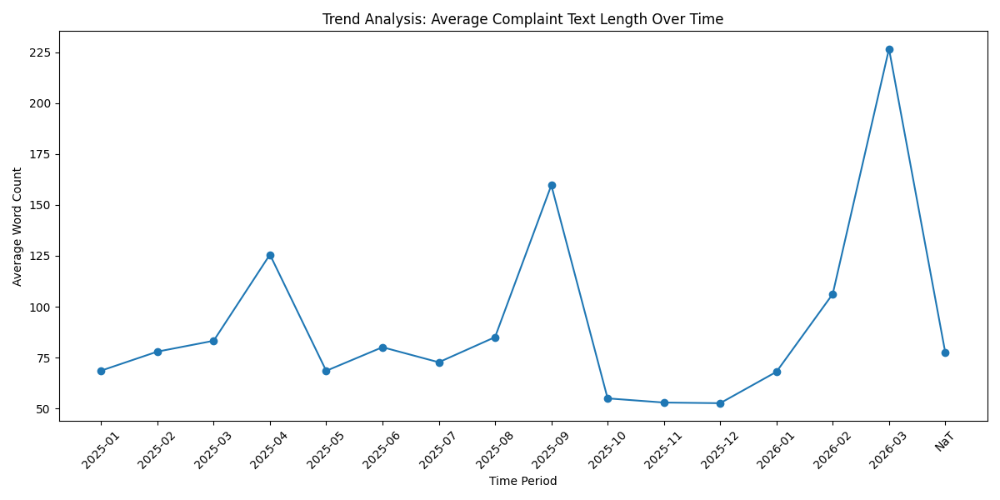
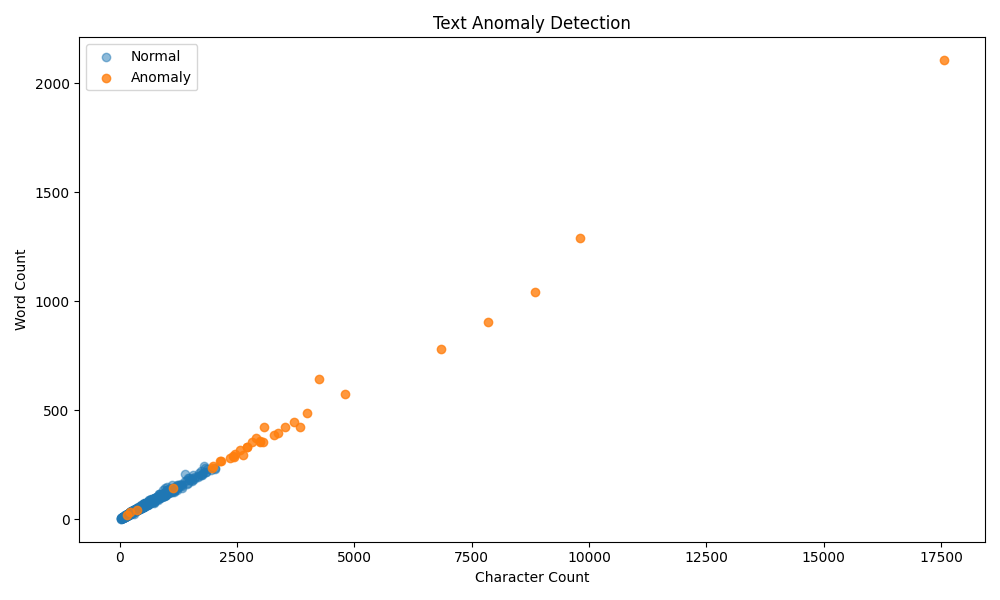

Academic | Text Mining | NLP & Unsupervised Learning
An end-to-end text mining pipeline on CFPB consumer complaint narratives: NLP preprocessing, feature engineering, Isolation Forest anomaly detection, and monthly trend analysis—with video walkthrough, visual outputs, and structured Excel exports.
Screen recording demonstrating the analysis pipeline, key outputs, and interpretation of results.

Average complaint word count over time (monthly trend).

Character count vs. word count — normal vs. anomaly complaints.